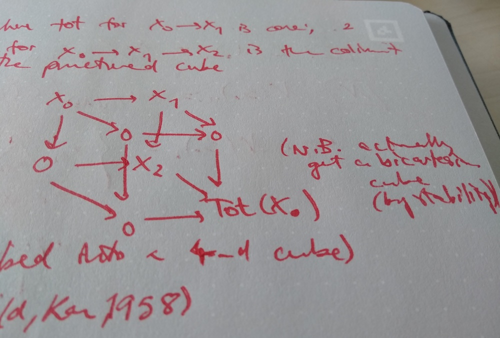

Blog / Categorification of the Dold-Kan correspondence
16th of August, 2018
So I’m currently at the Max Planck Institute for Mathematics in Bonn, Germany, for a conference on ‘Higher algebra and mathematical physics’. Lots of the talks have gone entirely above my head (reminding me how far behind my physics education has fallen), but have still been very interesting.
There was a talk yesterday on \mathbb{F}_1 things by Matilde Marcolli, and on Tuesday a talk by Bertrand Toën on moduli spaces of connections on open varieties as well as one by Damien Calaque (my co-supervisor) on \mathbb{E}_n-algebras and vertex models, all of which I managed to follow at least partially (take what you can get, I guess). Today, however, was a particularly interesting talk by Tobias Dyckerhoff on a categorified Dold-Kan correspondence. I don’t really want to talk about the details (because I’m not at all qualified to do so, and you’d be better served by going directly to the source), but something that I really enjoyed was a ‘dictionary’ that he presented.
Historically, the first step towards ‘groupification’ was the idea of enriching Betti numbers to abelian groups, which gave birth to what we now know as homology — the Betti numbers are just the ranks of the groups. Similarly, we now have the language to be able to ask that our abelian groups can actually be replaced by stable \infty-categories: we can turn homological algebra into categorified homological algebra, and, taking inspiration from Serge Lang’s famous ‘exercise’ in homological algebra, we can pick up any textbook on homological algebra and try to categorify (and then prove) all the theorems. To do so, we need to know what the classical constructions become in this higher-category language, whence the dictionary.
| classical | categorified |
|---|---|
| abelian group A | stable \infty-category \mathscr{A} |
| x\in A | X\in\mathscr{A} |
| y-x\in A | \operatorname{cone}(X\xrightarrow{f}Y)\in\mathscr{A} |
| \sum_{i=0}^n(-1)^i x_i\in A | \operatorname{Tot}(X_0\xrightarrow{f_0}\ldots\xrightarrow{f_{n-1}}X_n)\in\mathscr{A} |
| C\cong A\oplus B | \mathscr{C}\simeq\langle\mathscr{A},\mathscr{B}\rangle |
Note that the difference of two elements X,Y in the categorified language depends on the choice of some morphism between them, so there are lots of ‘values’ of “X-Y”, one for each f\colon X\to Y. The last line (corresponding to a direct sum) is a semi-orthogonal decomposition. Finally, we need to define what \mathrm{Tot} is.
For n=1, we have already defined that \mathrm{Tot} is given by \mathrm{cone}. For n=2, we draw some punctured (i.e. missing one vertex) cube (see below) and take the colimit (which, thanks to stability, makes the cube actually bi-cartesian). For n=3 we embed the above cube as the face of a 4-dimensional cube, and take a colimit, etc. etc.
